Account
Approved application · approved logoEvery image below is an actual canonical PNG. Open an image for its full resolution. These are authored design scenes, not current-app browser captures.
Avatar · validation
avatar-validationActions and implementation pointers
+ New page · Journal · Explore · All pages · ⌄ · Reflections · › · Reading · Upload avatar · Remove avatar · Ask Journl · Today’s Journal · Close · Instant · Thinking
apps/web/src/components/auth/settings/account/user-profile.tsxapps/web/src/components/auth/settings/security/security-settings.tsxapps/web/src/components/auth/settings/security/active-sessions.tsxapps/web/src/components/auth/settings/account/change-avatar.tsx
SHA256 a3623fd60ceee2536b7856d649b9901aa1f416a9cb7f61315f6df5a710567ec3

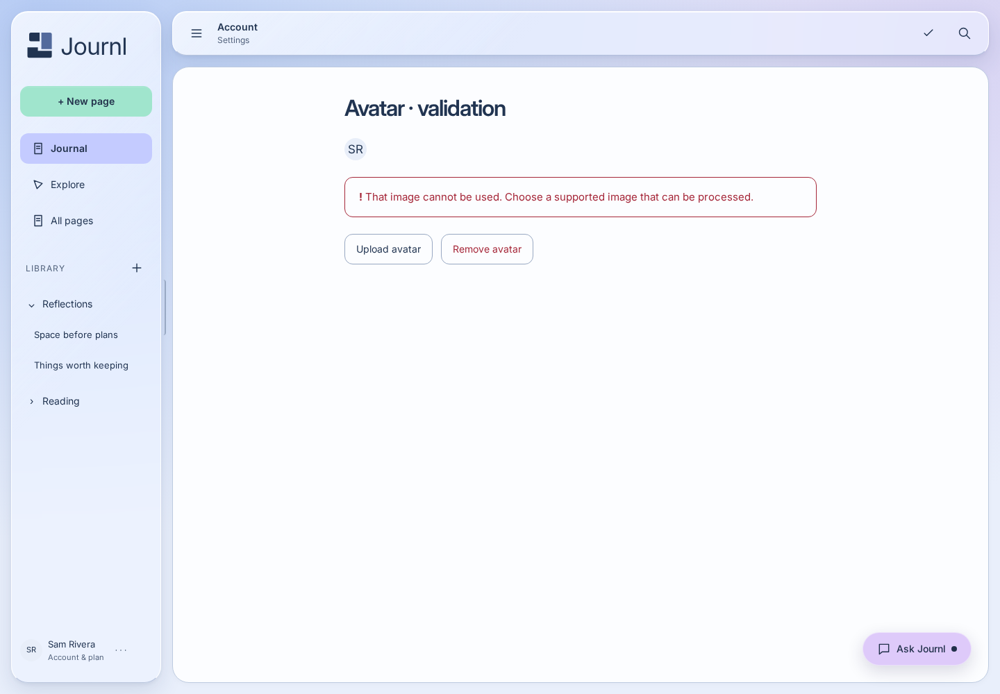
SHA256 877f344cefa93ce0f312519e07a821d3552c2b3d25bf00b9605d4dc38dba4c25
SHA256 64cc12ff62c1f4456bb6085ae4e7b64e898410a0f816520bc6748e7a74bbe0e4
SHA256 65755ed14ebc7aaf7a85ae10d4c86a96bd903a0b4e62d38f64e928e785574fc7
Avatar · uploading
avatar-uploadingActions and implementation pointers
+ New page · Journal · Explore · All pages · ⌄ · Reflections · › · Reading · Upload avatar · Remove avatar · Ask Journl · Today’s Journal · Close · Instant · Thinking
apps/web/src/components/auth/settings/account/user-profile.tsxapps/web/src/components/auth/settings/security/security-settings.tsxapps/web/src/components/auth/settings/security/active-sessions.tsxapps/web/src/components/auth/settings/account/change-avatar.tsx

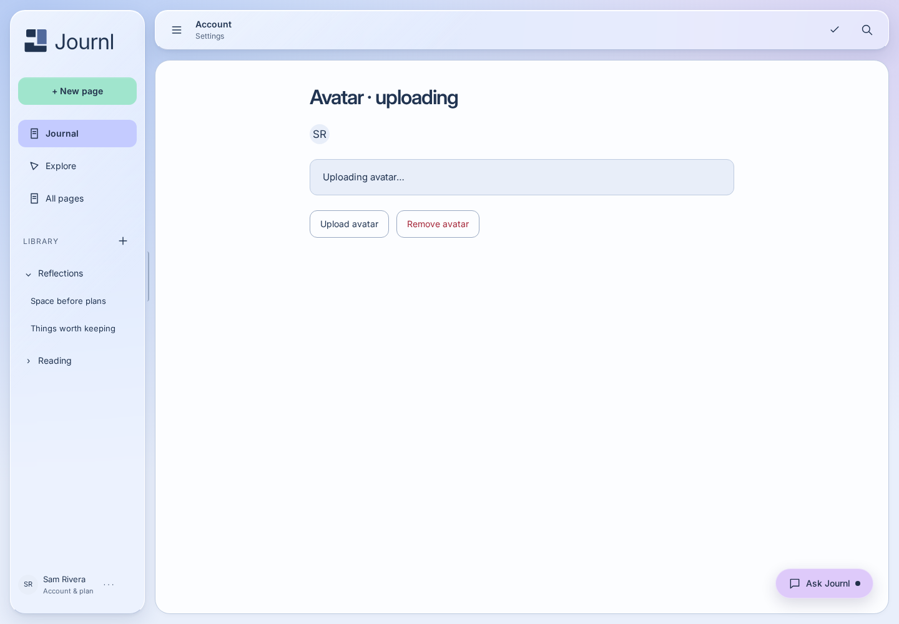
SHA256 d53418347b914935e120e6f438923c84be7b3b7dba659c5043dfb790ac4d74f5

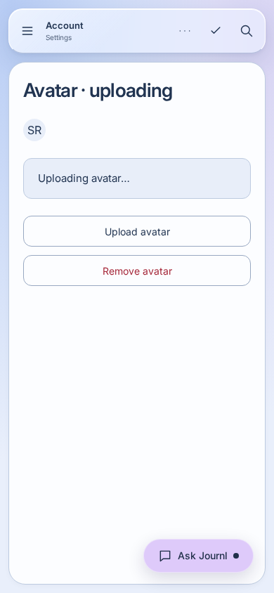
SHA256 94733c19cb01172161aba330179aed6a244f2ac7dfdb71bf83ffb71adaba238c
SHA256 68f41ea0a291f25b6c5ec2ca68ffd7b8486a7da69dcaf5b5443b3afee1ec3fe2

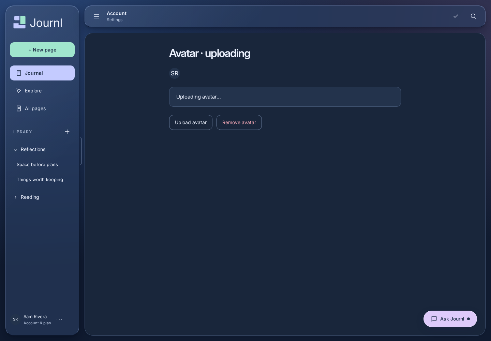
SHA256 6ea4c4dda880124fb40e6174fcc27d316b1f94307b73994bb66c4420dd41ebad
Avatar · removing
avatar-removingActions and implementation pointers
+ New page · Journal · Explore · All pages · ⌄ · Reflections · › · Reading · Upload avatar · Remove avatar · Ask Journl · Today’s Journal · Close · Instant · Thinking
apps/web/src/components/auth/settings/account/user-profile.tsxapps/web/src/components/auth/settings/security/security-settings.tsxapps/web/src/components/auth/settings/security/active-sessions.tsxapps/web/src/components/auth/settings/account/change-avatar.tsx
SHA256 67226aad4a231a5e19e615da4b0466490f79c0c2097b3a031c8d2298478e1faa
SHA256 52fce3641d6a225e4ae0ecc04b283b6b9538088a33c8d99c91b51bdbdd7acddb
SHA256 e860939dfb67d58ad4d87463cb922703c5ad72fd78aaa0dd85fbfc96dbfda41d
SHA256 1b9522de62083dc5251b8b4f51660112cc9cc9f5c989f501afea002f64c50e55
Avatar · error
avatar-errorActions and implementation pointers
+ New page · Journal · Explore · All pages · ⌄ · Reflections · › · Reading · Upload avatar · Remove avatar · Ask Journl · Today’s Journal · Close · Instant · Thinking
apps/web/src/components/auth/settings/account/user-profile.tsxapps/web/src/components/auth/settings/security/security-settings.tsxapps/web/src/components/auth/settings/security/active-sessions.tsxapps/web/src/components/auth/settings/account/change-avatar.tsx

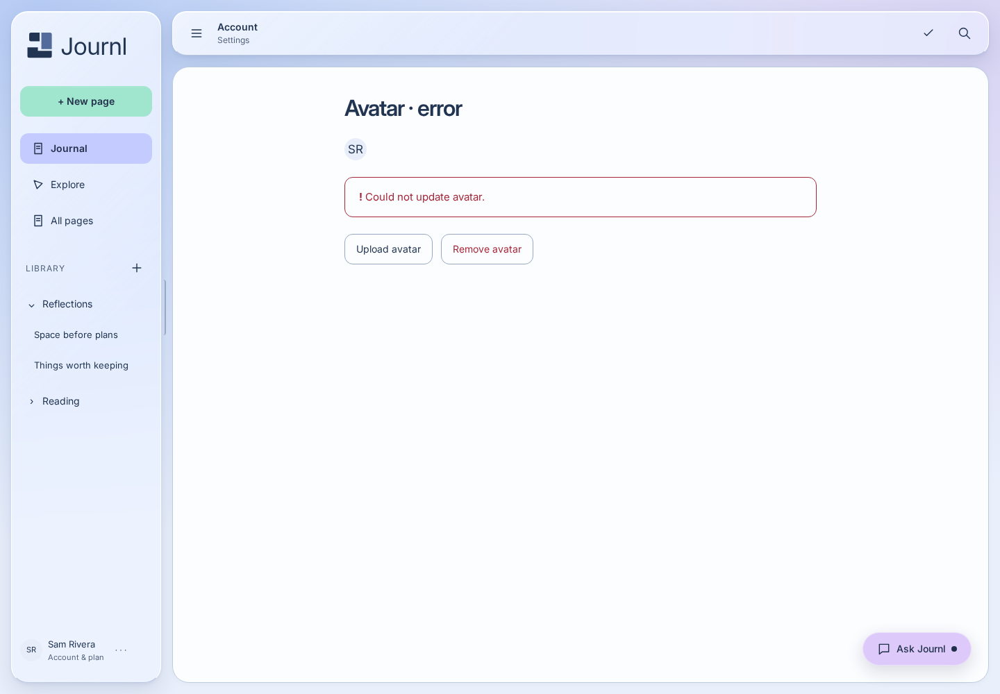
SHA256 2b9b2f824850a282e060c57cf7bba25c701b5450f8942081e1da7637d94afcd7

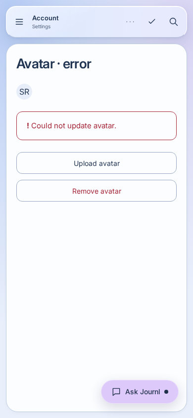
SHA256 b25f0d61f130c9a39dbf31c3333c75fca2bfff3e90b9298f3c9e28e39fd4e613

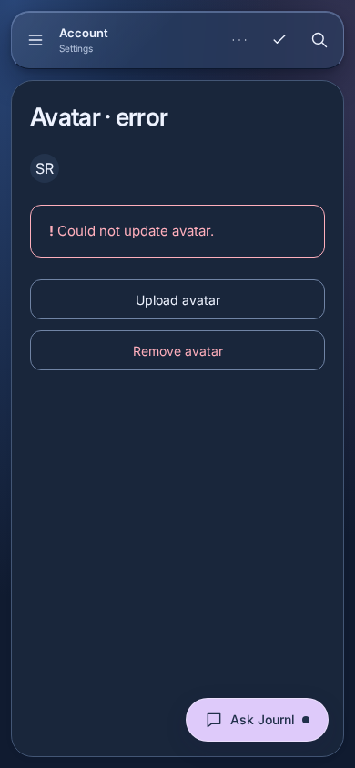
SHA256 22815dc7a96b2ff355fdb6830f896155b5acb983f0b1024869fc837cd80c2fa5

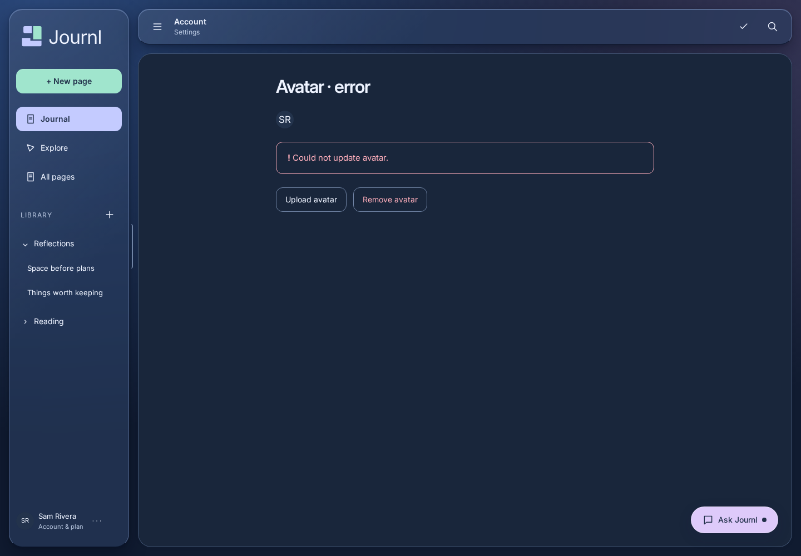
SHA256 8e8e9e5428cca51b3d90475ff004cf3c7f61816579d33a4db933f4a6e46a6b5c
Avatar · success
avatar-successActions and implementation pointers
+ New page · Journal · Explore · All pages · ⌄ · Reflections · › · Reading · Upload avatar · Remove avatar · Ask Journl · Today’s Journal · Close · Instant · Thinking
apps/web/src/components/auth/settings/account/user-profile.tsxapps/web/src/components/auth/settings/security/security-settings.tsxapps/web/src/components/auth/settings/security/active-sessions.tsxapps/web/src/components/auth/settings/account/change-avatar.tsx
SHA256 696d2abd8d748a642c4e53afdcfaebe8d97b7116ae8e9383870949f827f0de19

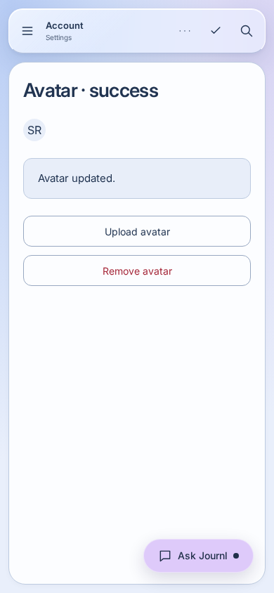
SHA256 d383e45b35b5e42e3fe4c6a14178f5925b6d16e29c9df70f72930a824c51758e
SHA256 91b8730e6feeb1f286ae16a7e07aa35e50d629faea991c59089aa434474ddc53

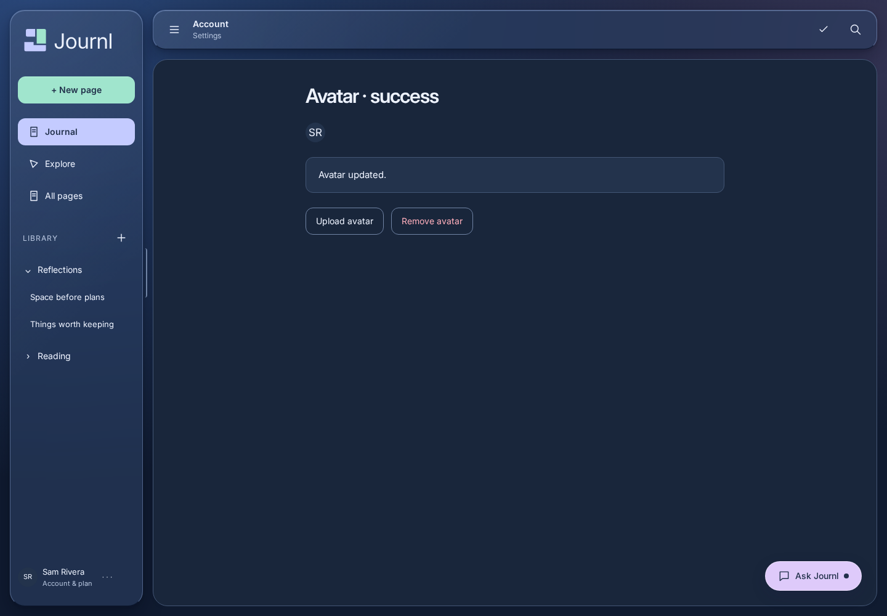
SHA256 0fc0d6044ec2517e6b30fdb35c1bf4d03453055d774edd0bcf142d4c3f7fe55b
Change email · ready
change-email-readyActions and implementation pointers
+ New page · Journal · Explore · All pages · ⌄ · Reflections · › · Reading · Cancel · Save email · Ask Journl · Today’s Journal · Close · Instant · Thinking
apps/web/src/components/auth/settings/account/user-profile.tsxapps/web/src/components/auth/settings/security/security-settings.tsxapps/web/src/components/auth/settings/security/active-sessions.tsxapps/web/src/components/auth/settings/account/change-email.tsx

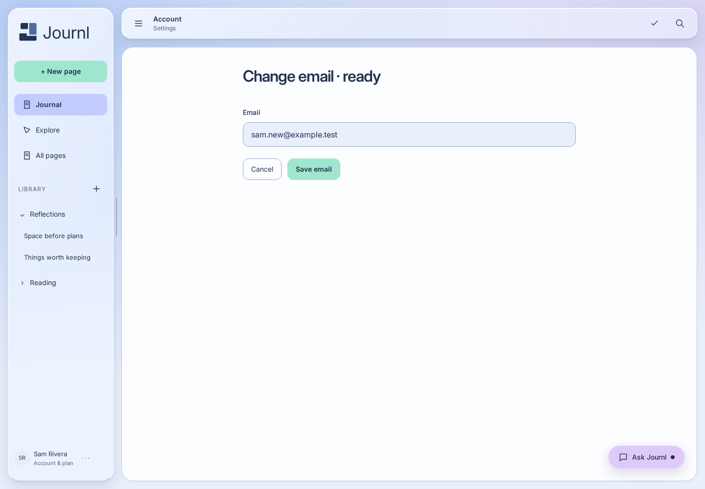
SHA256 c0dfe08691dffa848210ca5fa24f938b46931f441c05cc432deb9f4855758037

SHA256 238d568e5184c2288e911bc8ac8684190c90f982d97028a76bf11cc1e5184f2e

SHA256 6d4c348b01054f9d725f06af06fa21e0ee0789c6c4213e72fa019fdea813692e

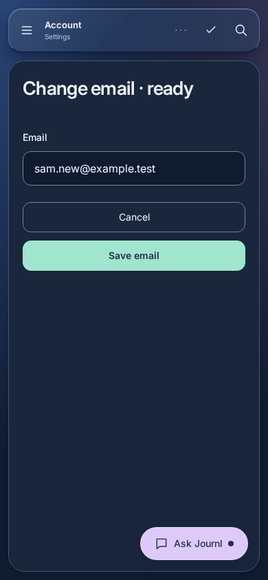
SHA256 a7c50c3da547acc85f52c8490268ed724adf1b83e4b9bd89a2800df52265245f
Change email · pending
change-email-pendingActions and implementation pointers
+ New page · Journal · Explore · All pages · ⌄ · Reflections · › · Reading · Save email… · Cancel · Ask Journl · Today’s Journal · Close · Instant · Thinking
apps/web/src/components/auth/settings/account/user-profile.tsxapps/web/src/components/auth/settings/security/security-settings.tsxapps/web/src/components/auth/settings/security/active-sessions.tsxapps/web/src/components/auth/settings/account/change-email.tsx

SHA256 abde984bc947e2c925c6df5a13ad2350c5fa5baa96d6ba4c817628088c1ccaa1

SHA256 a1acf52ef0f1e8678aefabc9888eee1bdf6ac042308519dea09555d2b7a84d7b

SHA256 cf14297611a89d7bdf2c58783f9b9c78dbb19dee917c2195f557e591874208a8

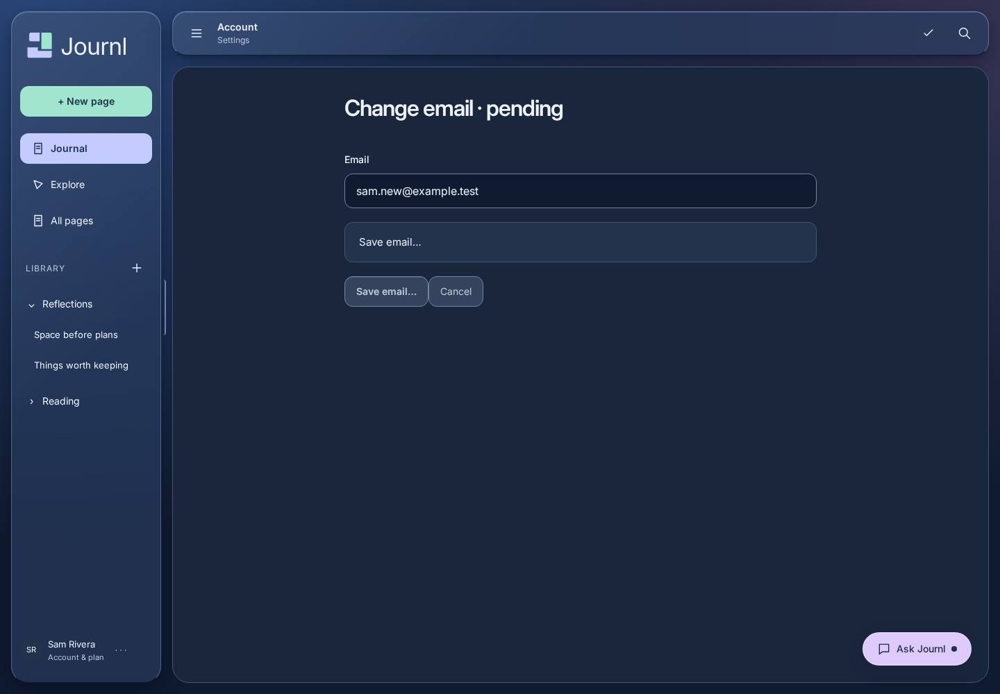
SHA256 21a3998d225b7daf17857a336dfa09c4f4a483f74d85640c702d5ba7bf139b59
Change email · error
change-email-errorActions and implementation pointers
+ New page · Journal · Explore · All pages · ⌄ · Reflections · › · Reading · Cancel · Save email · Ask Journl · Today’s Journal · Close · Instant · Thinking
apps/web/src/components/auth/settings/account/user-profile.tsxapps/web/src/components/auth/settings/security/security-settings.tsxapps/web/src/components/auth/settings/security/active-sessions.tsxapps/web/src/components/auth/settings/account/change-email.tsx

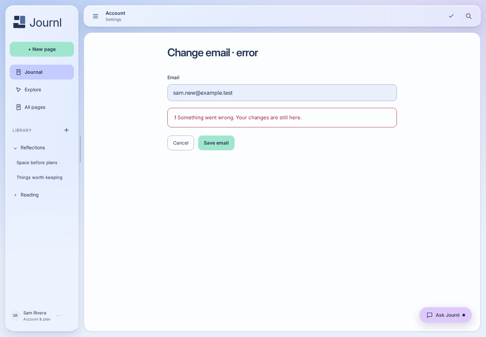
SHA256 d6b16b702a2ed187f203aee35d3e5ce0d28c066260cdee46e4b3e210a5bc669b

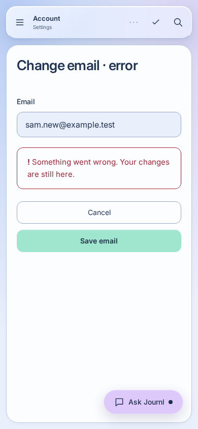
SHA256 c683a9cec92243ea31dcd2975f5483189453bb43080dbebcc91a2d492194dda1

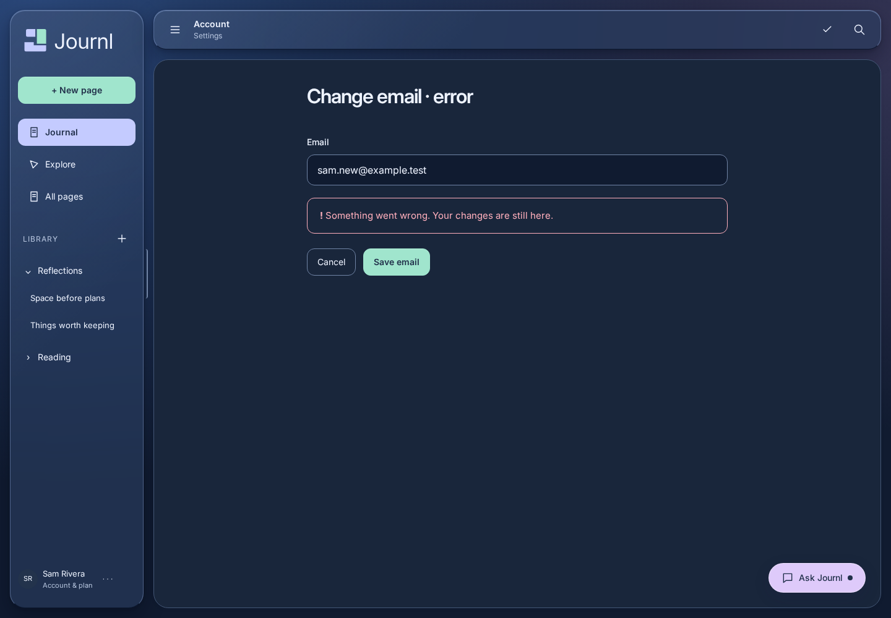
SHA256 dd058a01ad24f656e9cdd52974c2f9337d473ba9c7297d50c39fefe685dd97da

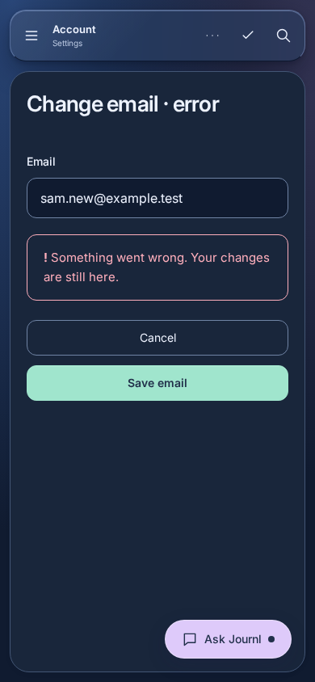
SHA256 64390001b609f35ed7db6a88c7954b1a475d01da058331dca7d01aed53f6d766
Change email · success
change-email-successActions and implementation pointers
+ New page · Journal · Explore · All pages · ⌄ · Reflections · › · Reading · Done · Ask Journl · Today’s Journal · Close · Instant · Thinking
apps/web/src/components/auth/settings/account/user-profile.tsxapps/web/src/components/auth/settings/security/security-settings.tsxapps/web/src/components/auth/settings/security/active-sessions.tsxapps/web/src/components/auth/settings/account/change-email.tsx

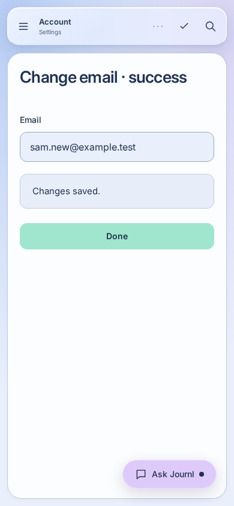
SHA256 b9d06a309c687d6afa4b9e92dbb626892b81726dd6b3497432211851dd701cee

SHA256 34ee64e0d092818ef771bcfea97f91f1e003e4cabb7f489c676f38f3ba7dc430

SHA256 6aa20272736b45e45b4547d3731ec5e65a929dfed0a49b79869e6a4c75417aa1

SHA256 f2770381355f7c8198aadf22b15c4163b3177685acd09ad99ab0c4f9d220dc43
Verify the new address
email-verificationActions and implementation pointers
+ New page · Journal · Explore · All pages · ⌄ · Reflections · › · Reading · Resend verification · Done · Ask Journl · Today’s Journal · Close · Instant · Thinking
apps/web/src/components/auth/settings/account/user-profile.tsxapps/web/src/components/auth/settings/security/security-settings.tsxapps/web/src/components/auth/settings/security/active-sessions.tsx

SHA256 a4db82a21b966a50a26f08a7678a55a8518d5d15b8457af77bda8bc9c0cf0654

SHA256 678efa443d4f3e91742fc3d3a18125c0211e31a56686bcd82e9b31f113ef50a9

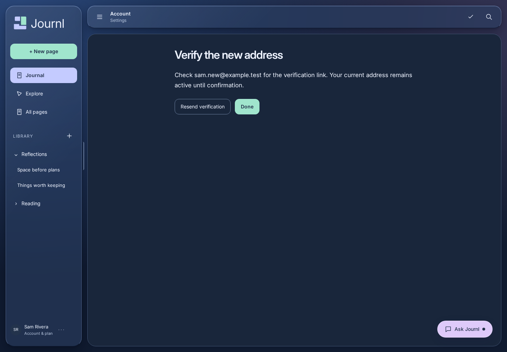
SHA256 f919572f866e747c3c56114a87b430069b30cbf8f5a8bd761a50c52c95d25ef9

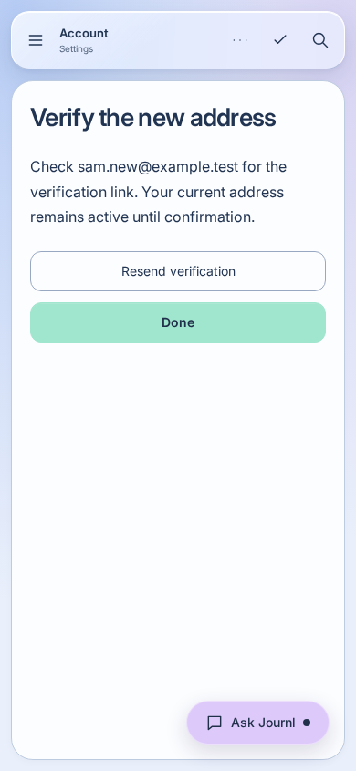
SHA256 191d944d54ca4303c7d41549b0a2005b85157dfdbe6b54bacf17a0ff79e940ac